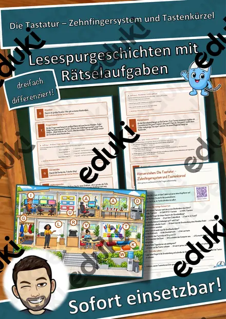
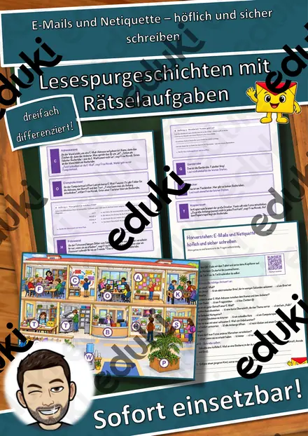
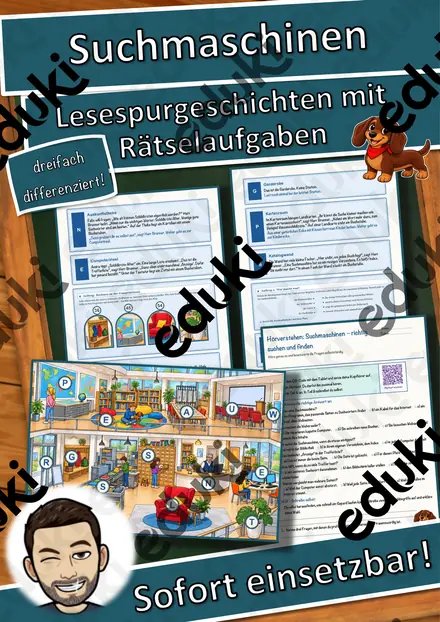
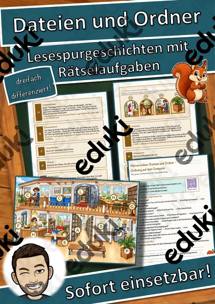
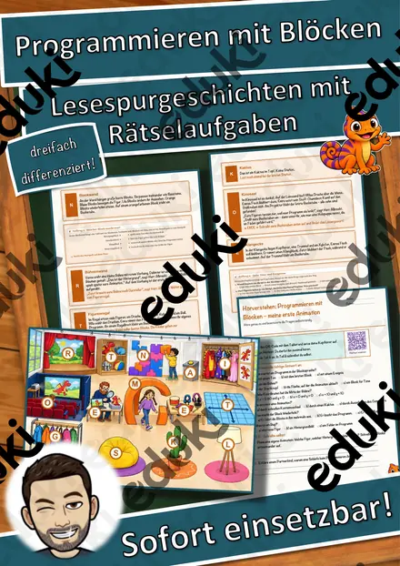
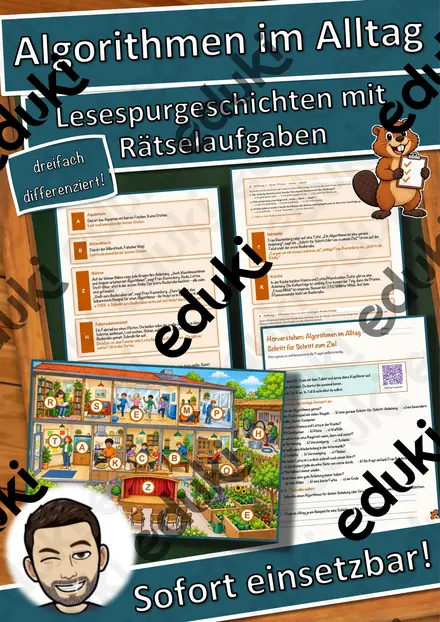

Die Tastatur – Zehnfingersystem und Tastenkürzel – Lesespurgeschichte mit Rätselaufgaben (Klasse 5)

E-Mails und Netiquette – höflich und sicher schreiben – Lesespurgeschichte mit Rätselaufgaben (Klasse 5)

Suchmaschinen – richtig suchen und finden – Lesespurgeschichte mit Rätselaufgaben (Klasse 5)

Dateien und Ordner – Ordnung auf dem Computer – Lesespurgeschichte mit Rätselaufgaben (Klasse 5)

Programmieren mit Blöcken – meine erste Animation – Lesespurgeschichte mit Rätselaufgaben (Klasse 5)

Algorithmen im Alltag – Schritt für Schritt zum Ziel – Lesespurgeschichte mit Rätselaufgaben (Klasse 5)

Stationenarbeit Fotografie inkl. Musterübung und Lernvideos

Tastschreiben - Tastschreiben Laminate
Keine Materialien gefunden – versuch einen anderen Suchbegriff oder Filter.